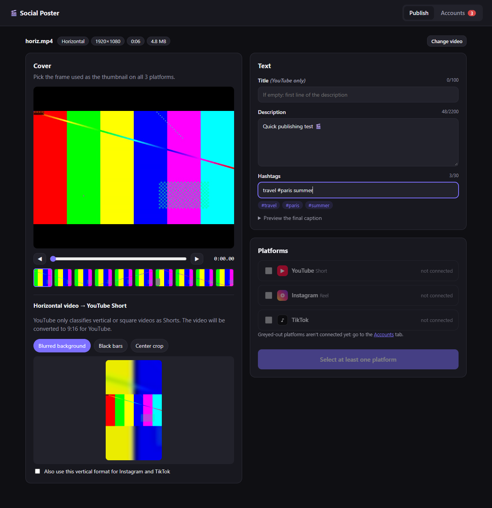

Publish one video to YouTube, Instagram and TikTok in one click
Social Poster is a free, open-source app that runs on your own computer. Import a vertical or horizontal video, pick a cover frame, write one description and one set of hashtags, then publish everywhere at once.
YouTube Shorts
Instagram Reels
TikTok

Features
- Upload videos to YouTube (as Shorts), Instagram (as Reels) and TikTok with the same description, hashtags and cover.
- Choose the cover from any frame of the video.
- Horizontal videos are converted to 9:16 so they qualify as YouTube Shorts.
- Choose which platforms to publish to for each video.
- Runs locally: your videos and login tokens never leave your computer, except when they are sent to the platforms you choose.
Uses YouTube API Services. Social Poster uploads videos to your YouTube channel through the YouTube API Services.
By using Social Poster with YouTube, you agree to be bound by the YouTube Terms of Service.
See also the Google Privacy Policy and our Privacy Policy.